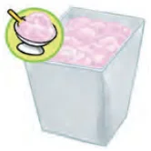
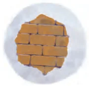
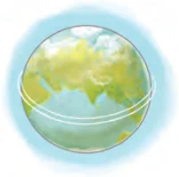
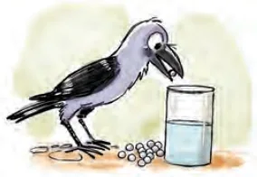
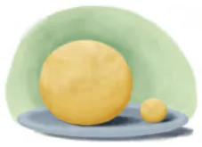

For guesstimate problems, make a guess first before solving.
1.

Estimate how many scoops of ice cream can be obtained from a cuboidal container of dimensions 10 cm \(\times\) 15 cm \(\times\) 20 cm.
2.A cube of integer side length \(a\) is made of unit cubes. Write an expression giving the number of unit cubes to be added to make a cube of side length \(a + 1\).
*3.

Solve the following:
(i)Could a person drink enough water in a lifetime to fill an entire room the size of your classroom?
(ii)Estimate the number of bricks used to build the walls of your classroom.
4.You are given two options: (A) one chocolate cube of side 50 mm, (B) hundred chocolate cubes of side 10 mm. Which option gives you more chocolate?
5.
If all the people in the world are crowded together in one location, how much area would it cover?
6.A school provides milk to its students in cylindrical glasses, each with a diameter of 7 cm. If each glass is filled with milk to a height of 12 cm, how many litres of milk are needed to serve 1600 students? Use \(1000\ \text{cm}^{3} = 1\) litre.
7.The surface area of a sphere of radius 5 cm is five times the area of the curved surface of a cone of radius 4 cm. Find the height and the volume of the cone.
8.
Take Earth to be a perfect sphere with radius 6370 km. Take Jupiter to be a perfect sphere with radius 69,900 km. Take the Sun to be a perfect sphere with radius 6,95,700 km. Compute approximately:
(i)the ratio of the volume of Jupiter to the volume of the Earth;
(ii)the ratio of the volume of the Sun to the volume of the Earth.
(Calculator can be used.)
9.Show that the volume of a sphere is equal to \(\frac{2}{3}\) of the volume of the smallest cylinder which encloses it.
*10.

Suppose the Earth is perfectly spherical. A string is wrapped tightly around the equator of the Earth. Another string, 1 metre longer, is placed around the Earth so that it forms a larger circle, staying the same distance above the ground everywhere. How high above the ground is the second string? Repeat this for: (i) the Moon (ii) Jupiter (iii) a volleyball. Are you surprised by the three answers? Why or why not?
*11.We have a cylinder with a base radius of \(r\) cm and height \(h\) cm. A square pyramid is fitted inside it. The square base of the pyramid lies on the base of the cylinder, its corners on the boundary of the cylinder. The apex of the pyramid lies on the top of the cylinder. Find the ratio of the volume of this pyramid to the volume of the cylinder.
12.
What is the change in volume when:
(i)
the length of a cuboid with dimensions \(l, w, h\) is increased by 1 unit?
(a)1 cubic unit
(b)\((lwh + 1)\) cubic unit
(c)\(wh\) cubic units
(d)\(lw\) cubic units
(e)\(lh\) cubic units
(ii)
the radius of a cylinder with dimensions \(r, h\) is increased by 1 unit?
(a)1 cubic unit
(b)\(\pi r^{2}h\) cubic units
(c)\(\pi r^{2}\) cubic units
(d)\(2\pi rh + 2\pi h\) cubic units
(e)\(2\pi rh + \pi h\) cubic units
*(iii)the radius of a sphere is decreased by 1 unit?
*13.Given a cube with volume \(V\), express its total surface area \(S\) in terms of \(V\).
*14.Given a cube with total surface area \(S\), express its volume \(V\) in terms of \(S\).
15.

A cylindrical glass of height 25 cm and radius 4 cm has water up to a height of 16 cm. A crow wants to drink water from this glass. The water must be at a height of 20 cm for the crow to reach it. There are some marbles lying around. How many marbles of radius 1 cm should the crow drop into the glass to make the water reach the required height?
16.Find the volume of ink in a new ball point pen. Take the necessary measurements and make approximations, as needed.
17.

Solve:
(i)A ball of chapati dough of radius 6 cm is prepared. Estimate how many chapatis can be made from it?
*(ii)Cut a coconut/muskmelon in half and find out the approximate volume of edible coconut flesh/fruit by taking the necessary measurements.
18.
Looking at the Ganita Manjari, Grade 9, Part 2 textbook, Sheela wonders:
(i)If all the pages of this textbook were laid out side-by-side on the floor would they cover the entire classroom floor?
(ii)What is the maximum number of textbooks that can fit in an empty storeroom of dimensions 15 ft \(\times\) 20 ft \(\times\) 30 ft?
*19.
If the entire human population decided to climb into one giant cube, how long would the side have to be?
*20.
The Earth’s surface has an estimated volume of 1.38 billion \(\text{km}^{3}\) of water. Suppose the Earth is a perfect sphere and all this water forms a uniform layer completely covering the Earth’s surface, like a thin water bubble. Estimate the thickness of this water layer. The Earth’s radius is ~6371 km.
(i)Write an expression that gives the thickness of this water layer.
(ii)Simplify the expression in (i) using a calculator.
*21.Give the dimension of a cuboid whose volume is halved when its surface area is doubled.
22.Project: Find the volume of your house making necessary approximations. Present how you solved it.